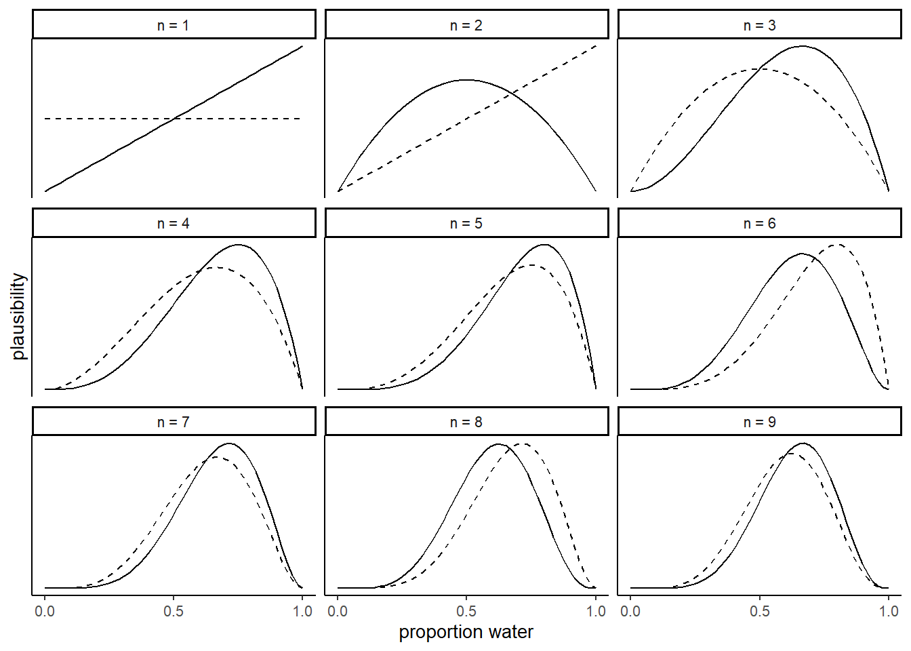
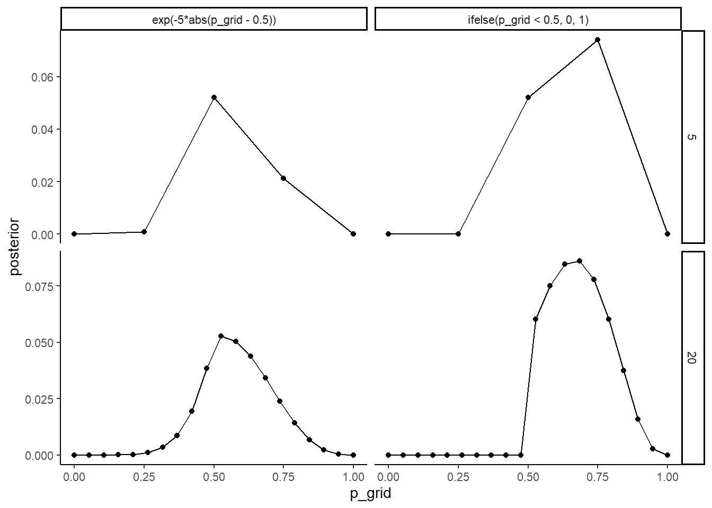
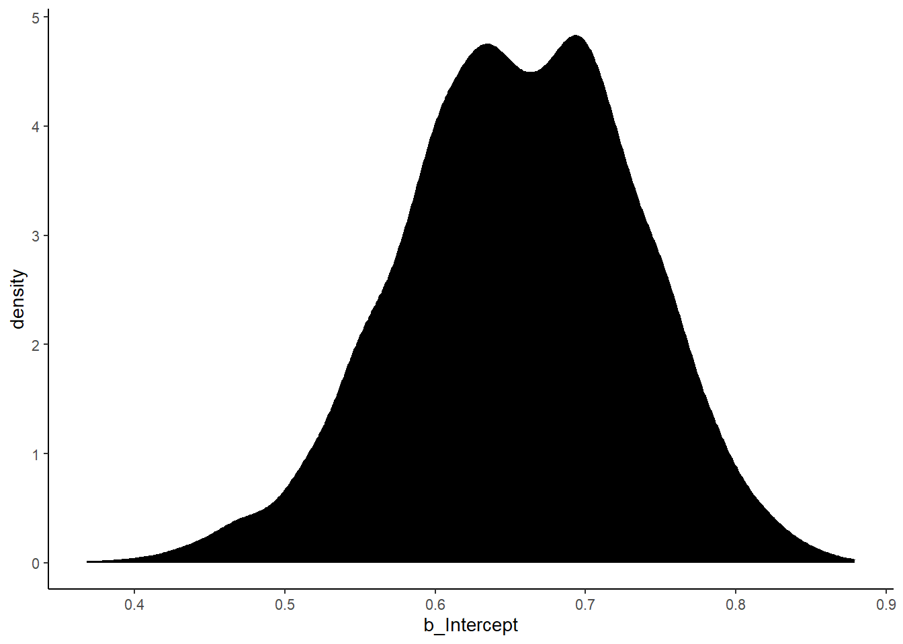
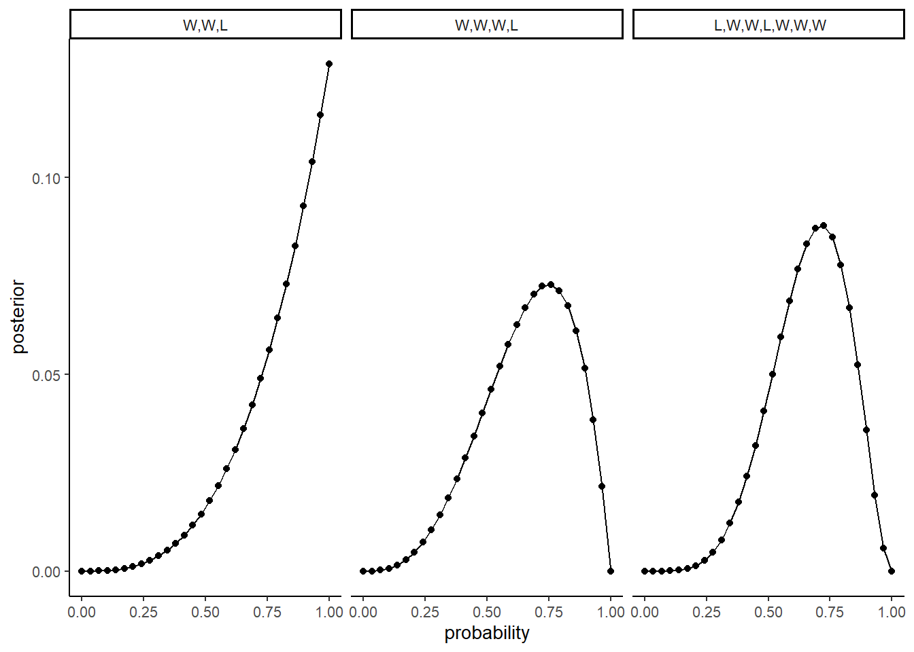
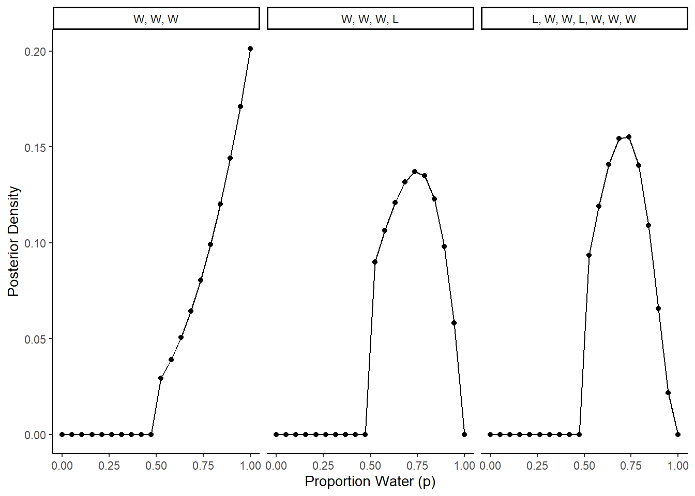

2 Small Worlds and Large Worlds
2.1 Byesian Updating
地球儀の例について、逐次更新をシミュレート
(d <- tibble(toss = c("w", "l", "w", "w", "w", "l", "w", "l", "w")))## # A tibble: 9 × 1
## toss
## <chr>
## 1 w
## 2 l
## 3 w
## 4 w
## 5 w
## 6 l
## 7 w
## 8 l
## 9 w(d <-
d %>%
mutate(n_trials = 1:9,
n_success = cumsum(toss=="w")))## # A tibble: 9 × 3
## toss n_trials n_success
## <chr> <int> <int>
## 1 w 1 1
## 2 l 2 1
## 3 w 3 2
## 4 w 4 3
## 5 w 5 4
## 6 l 6 4
## 7 w 7 5
## 8 l 8 5
## 9 w 9 6sequence_length <- 50
# 各トライアルごとに横軸を追加
d %>%
expand(nesting(n_trials, toss, n_success),
p_water = seq(from = 0, to = 1, length.out = sequence_length)) ->d2
# 1つ前のtrialの番号と成功数を追加
d2 %>%
group_by(p_water) %>%
mutate(lagged_n_trials = lag(n_trials, k = 1),
lagged_n_success = lag(n_success, k = 1))-> d3
# 尤度を計算
d3 %>%
ungroup() %>%
mutate(prior = ifelse(n_trials == 1, .5,
dbinom(x=lagged_n_success,
size =lagged_n_trials,
prob = p_water)),
likelihood = dbinom(x = n_success,
size = n_trials,
prob = p_water),
strip = str_c("n = ", n_trials)) -> d4
# 尤度のスケールを変更
d4 %>%
group_by(n_trials) %>%
mutate(prior = prior / sum(prior),
likelihood = likelihood / sum(likelihood)) ->d5
# 描画
d5 %>%
ggplot(aes(x = p_water)) +
geom_line(aes(y = prior),
linetype = 2) +
geom_line(aes(y = likelihood))+
scale_x_continuous("proportion water", breaks = c(0, .5, 1)) +
scale_y_continuous("plausibility", breaks = NULL) +
theme(panel.grid = element_blank()) +
facet_wrap(~ strip, scale="free_y")
2.2 Making th model
2.2.1 Grid approximation
tibble(n_points = c(5,20)) %>%
mutate(p_grid = purrr::map(n_points, ~seq(0,1,length.out=.))) %>%
unnest(p_grid) %>%
expand(nesting(n_points,p_grid),
priors = c("ifelse(p_grid < 0.5, 0, 1)",
"exp(-5*abs(p_grid - 0.5))")) %>%
mutate(prior = ifelse(priors == "ifelse(p_grid < 0.5, 0, 1)",
ifelse(p_grid < 0.5, 0, 1),
exp(-5 * abs(p_grid - 0.5)))) %>%
mutate(likelihood = dbinom(6,9,prob = p_grid)) %>%
mutate(posterior = likelihood*prior / sum(likelihood*prior)) %>%
ggplot(aes(x=p_grid,y=posterior))+
geom_line()+
geom_point()+
theme(panel.grid = element_blank())+
facet_grid(n_points ~ priors, scale = "free")
2.2.2 Quadratic approximation
library(rethinking)
#globe.qa <- quap(
#alist(
#W ~ dbinom(W+L,p),
#p ~ dunif(0,1)
#),
#data = list(W=6, L =3))
#precis(globe.qa)2.2.3 MCMC
MCMCをもちいて推定してみる。
library(brms)
b2.1 <-
brm(data = list(W = 24),
family = binomial(link="identity"),
formula = W|trials(36) ~ 0+Intercept,
prior = prior(beta(1,1),class = "b", lb = 0, ub =1),
backend = "cmdstanr",
file = "output/Chapter2/b2.1",
seed =123)推定結果は以下の通り。
print(b2.1)## Family: binomial
## Links: mu = identity
## Formula: W | trials(36) ~ 0 + Intercept
## Data: list(W = 24) (Number of observations: 1)
## Draws: 4 chains, each with iter = 2000; warmup = 1000; thin = 1;
## total post-warmup draws = 4000
##
## Population-Level Effects:
## Estimate Est.Error l-95% CI u-95% CI Rhat Bulk_ESS Tail_ESS
## Intercept 0.66 0.08 0.50 0.80 1.00 1658 1849
##
## Draws were sampled using sample(hmc). For each parameter, Bulk_ESS
## and Tail_ESS are effective sample size measures, and Rhat is the potential
## scale reduction factor on split chains (at convergence, Rhat = 1).事後分布は以下の通り。
posterior_samples(b2.1) %>%
ggplot(aes(x=b_Intercept))+
geom_density(fill="black")+
theme(panel.grid=element_blank())
2.3 Practice
2.3.1 2M1
Recall the globe tossing model from the chapter. Compute and plot the grid approximate posterior distribution for each of the following sets of observations. In each case, assume a uniform prior for p. (1) W, W, W (2) W, W, W, L (3) L, W, W, L, W, W, W
dist <-
tibble(p_grid = seq(0,1,length.out = 30)) %>%
mutate(prior = rep(1,30),
likelihood_1 = dbinom(3,3,p_grid),
likelihood_2 = dbinom(3,4,p_grid),
likelihood_3 = dbinom(5,7,p_grid),
across(starts_with("likelihood"), ~ .x * prior),
across(starts_with("likelihood"), ~ .x / sum(.x))) %>%
pivot_longer(cols = starts_with("likelihood"),names_to = "pattern", values_to = "posterior") %>%
arrange(pattern) %>%
separate(pattern, c(NA, "pattern"), sep = "_", convert = TRUE) %>%
mutate(obs = case_when(pattern == 1L ~ "W,W,L",
pattern == 2L ~ "W,W,W,L",
pattern == 3L ~ " L,W,W,L,W,W,W"))
dist %>%
ggplot(aes(x=p_grid,y=posterior))+
geom_line()+
geom_point()+
theme(panel.grid = element_blank())+
scale_x_continuous("probability")+
facet_wrap(vars(fct_inorder(obs)),nrow=1)
2.3.2 2M2
Now assume a prior for p that is equal to zero when p < 0.5 and is a positive constant when p ≥ 0.5. Again compute and plot the grid approximate posterior distribution for each of the sets of observations in the problem just above.
dist <- tibble(p_grid = seq(from = 0, to = 1, length.out = 20)) %>%
mutate(prior = case_when(p_grid < 0.5 ~ 0L,
TRUE ~ 1L),
likelihood_1 = dbinom(3, size = 3, prob = p_grid),
likelihood_2 = dbinom(3, size = 4, prob = p_grid),
likelihood_3 = dbinom(5, size = 7, prob = p_grid),
across(starts_with("likelihood"), ~ .x * prior),
across(starts_with("likelihood"), ~ .x / sum(.x))) %>%
pivot_longer(cols = starts_with("likelihood"), names_to = "pattern",
values_to = "posterior") %>%
separate(pattern, c(NA, "pattern"), sep = "_", convert = TRUE) %>%
mutate(obs = case_when(pattern == 1L ~ "W, W, W",
pattern == 2L ~ "W, W, W, L",
pattern == 3L ~ "L, W, W, L, W, W, W"))
ggplot(dist, aes(x = p_grid, y = posterior)) +
facet_wrap(vars(fct_inorder(obs)), nrow = 1) +
geom_line() +
geom_point() +
labs(x = "Proportion Water (p)", y = "Posterior Density")
2.3.3 2M3
Suppose there are two globes, one for Earth and one for Mars. The Earth globe is 70% covered in water. The Mars globe is 100% land. Further suppose that one of these globes—you don’t know which—was tossed in the air and produced a “land” observatiion. Assume that each globe was equally likely to be tossed. Show that the posterior probability that the globe was the Earth, conditional on seeing “land” (Pr(Earth|land)), is 0.23.
# probability of land, given Earth
p_le <- 0.3
# probability of land, given Mars
p_lm <- 1.0
# probability of Earth
p_e <- 0.5
# probability of land
p_l <- (p_e * p_le) + ((1 - p_e) * p_lm)
# probability of Earth, given land (using Bayes' Theorem)
p_el <- (p_le * p_e) / p_l
p_el## [1] 0.23076922.3.4 2M4
Suppose you have a deck with only three cards. Each card has only two sides, and each side is either black or white. One card has two black sides. The second card has one black and one white side. The third card has two white sides. Now suppose all three cards are placed in a bag and shuffled. Someone reaches into the bag and pulls out a card and places it flat on a table. A black side is shown facing up, but you don’t know the color of the side facing down. Show that the probability that the other side is also black is 2/3. Use the counting method (Section 2 of the chapter) to approach this problem. This means counting up the ways that each card could produce the observed data (a black side faceing up on the table).
card_bb_likelihood <- 2
card_bw_likelihood <- 1
card_ww_likelihood <- 0
likelihood <- c(card_bb_likelihood, card_bw_likelihood, card_ww_likelihood)
prior <- c(1, 1, 1)
posterior <- likelihood * prior
posterior <- posterior / sum(posterior)
posterior[1]## [1] 0.66666672.3.5 2M5
Imagine that black ink is heavy, and so cards with black sides are heavier than cards with white sides. As a result, it’s less likely that a card with black sides is pulled from the bag. So again assume there are three cards: B/B, B/W, and W/W. After experimenting a number of times, you conclude that for every way to pull the B/B card from the bag, there are 2 ways to pull the B/W card and 3 ways to pull the W/W card. Again suppose that a card is pulled and a black side appears face up. Show that the probability the other side is black is now 0.5. Use the counting method, as before.
card_bb_likelihood <- 2
card_bw_likelihood <- 1
card_ww_likelihood <- 0
likelihood <- c(card_bb_likelihood, card_bw_likelihood, card_ww_likelihood)
prior <- c(1, 2, 3)
posterior <- likelihood * prior
posterior <- posterior / sum(posterior)
posterior[1]## [1] 0.52.3.6 2M7
Assume again the original card problem, with a single card showing a black side face up. Before looking at the other side, we draw another card from the bag and lay it face up on the table. The face that is shown on the new card is white. Show that the probability that the first card, the one showing a black side, has black on its other side is now 0.75. Use the counting method, if you can. Hint: Treat this like the sequence of globe tosses, countng all the ways to see each observation, for each possiible first card.
# 2 choices for first card, with 3 options for second card: 2 W/W + 1 W/B
card_bb_likelihood <- 2 * 3
card_wb_likelihood <- 1 * 2
card_ww_likelihood <- 0
likelihood <- c(card_bb_likelihood, card_wb_likelihood, card_ww_likelihood)
prior <- c(1,1,1)
posterior <- prior * likelihood
posterior <- posterior / sum(posterior)
posterior[1]## [1] 0.752.3.7 2H1
Suppose there are two species of panda bear. Both are equally common in the wild and live in the sample places. They look exactly alike and eat the same food, and there is yet no genetic assay capable of telling them apart. They differ however in their family sizes. Species A gives birth to twins 10% of the time, otherwise birthing a single infant. Species births twins 20% of the time, ottherwise birthing singleton infants. Assume these numbers are known with certainty, from many years of field research. Now suppose you are managing a captive panda breeding program. You have a newe female panda of unknown species, and she has just given birth to twins. What is the probability that her next birth will also be twins?
# After first birth, likelihood of species A and B is equal to the rate the
# species give birth to twins
a_likelihood <- 0.1
b_likelihood <- 0.2
# Next calculate the posterior probability that the panda belongs to each
# species, assume species are equally likely
likelihood <- c(a_likelihood, b_likelihood)
prior <- c(1, 1)
posterior <- likelihood * prior
posterior <- posterior / sum(posterior)
posterior## [1] 0.3333333 0.6666667# The probability the next birth is twins is the probability the panda belongs
# to each species times the likelihood each species gives birth to twins
(posterior[1] * a_likelihood) + (posterior[2] * b_likelihood)## [1] 0.16666672.3.8 2H2
Recall all the facts from the problem above. Now compute the probability that the panda we have is from species A, asssuming we have observed only the first birth at that it was twins.
# probability of species A
p_a <- 0.5
# probability of twins, given species A
p_ta <- 0.1
# probability of twins, given species B
p_tb <- 0.2
# probability of twins
p_t <- (p_a * p_ta) + ((1 - p_a) * p_tb)
# probability of species A, given twins (using Bayes' Theorem)
# (note this is equivalent to `posterior[1]` above)
p_at <- (p_ta * p_a) / p_t
p_at## [1] 0.33333332.3.9 2H3
Continuing on from the previous problem, suppose the same panda mother has a second birth and that it is not twins, but a singleton infant. Compute the posterior probability that this panda is species A.
# likelihood for each species is Pr(twins) * Pr(singleton)
a_likelihood <- 0.1 * (1 - 0.1)
b_likelihood <- 0.2 * (1 - 0.2)
# compute posterior probabilities
likelihood <- c(a_likelihood, b_likelihood)
prior <- c(1, 1)
posterior <- likelihood * prior
posterior <- posterior / sum(posterior)
posterior[1]## [1] 0.362.3.10 2H4
A common boast of Bayesian statisticians is that Bayesian inference makes it easy to use all of the data, even if the data are of different types. So suppose now that a veterinarian comes along who has a new genetic test that she claims can identify the species of our mother panda. But the test, like all tests, is imperfect. This is the information you have about the test:
The probability it correctly identifies a species A panda is 0.8. The probability it correctly identifies a species B panda is 0.65. The vet administers the test to your panda and tells you that the test is positive for species A. First ignore your previous information from the births and compute the posterior probability that your panda is species A. Then redo your calculation, now using the birth data as well.
# use Bayes' Theorem to determine the probability of species A, given a positive
# test
p_ap <- (0.8 * 0.5) / ((0.5 * 0.8) + (0.5 * 0.35))
p_ap## [1] 0.6956522# Now include test data with observed births
# likelihood for each species is Pr(twins) * Pr(singleton)
a_likelihood <- 0.1 * (1 - 0.1)
b_likelihood <- 0.2 * (1 - 0.2)
# compute posterior probabilities, using test result as prior
likelihood <- c(a_likelihood, b_likelihood)
prior <- c(p_ap, (1 - p_ap))
posterior <- likelihood * prior
posterior <- posterior / sum(posterior)
posterior[1]## [1] 0.5625